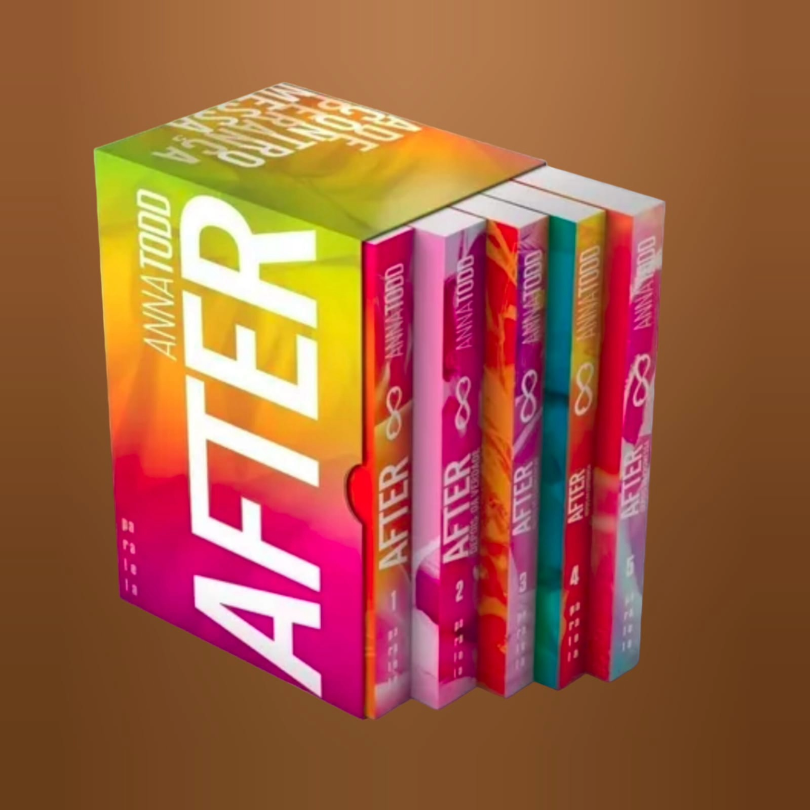
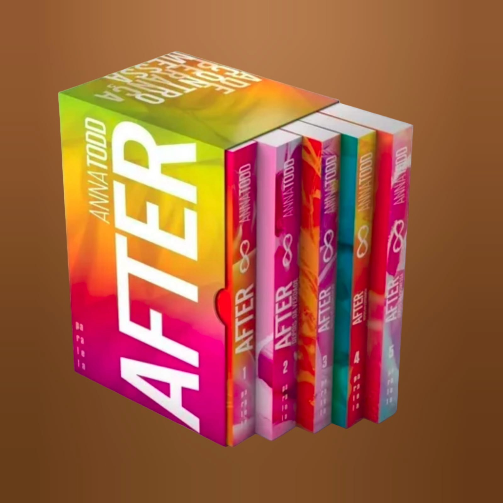
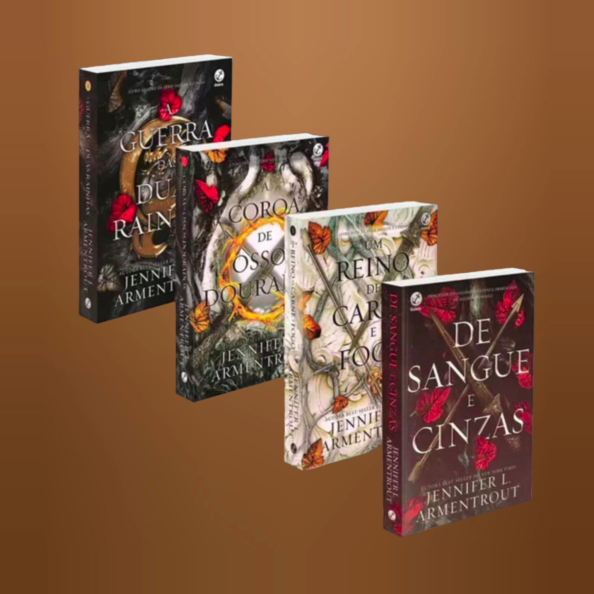
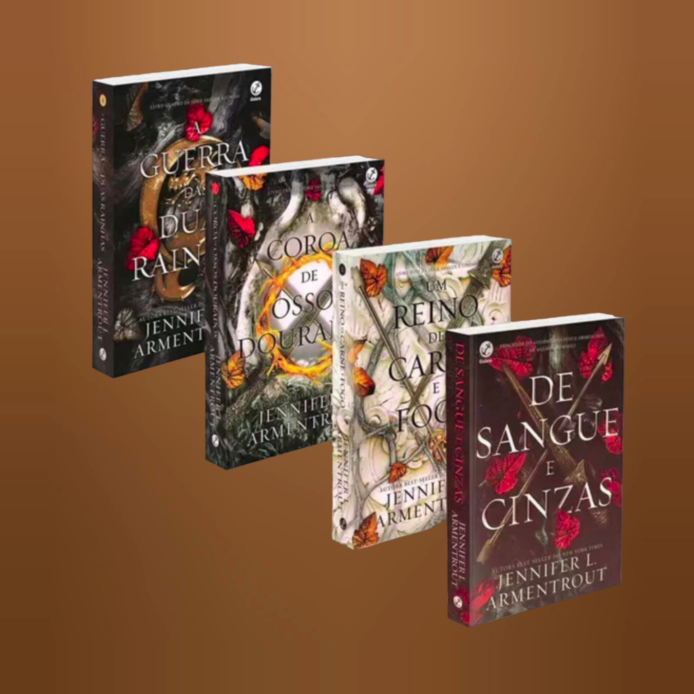

Estante
 


 



Box A Seleção
O livro "A Seleção" segue a história de trinta e cinco meninas que têm a oportunidade de competir pelo coração do Príncipe Maxon, vivendo em um luxuoso palácio. Para America Singer, no entanto, a Seleção é um pesadelo, pois significa abandonar seu amor por Aspen, de uma casta inferior, e entrar em uma competição que ela não deseja. Conforme a trama se desenrola, America questiona seus planos e percebe que a vida que imaginou pode não se comparar ao futuro inesperado que se apresenta. Em continuações como "A Herdeira," "A Coroa" e "Felizes para Sempre," a história se concentra na Princesa Eadlyn, que realiza sua própria Seleção, mas duvida que algum dos trinta e cinco pretendentes consiga conquistar seu coração.
R$200,00
Box Acotar
No primeiro livro da saga, Feyre, filha de mercadores humanos falidos, vive em um mundo dividido por uma muralha mágica que separa feéricos e humanos. Como caçadora, ela abandona suas fantasias para sustentar a família. Um dia, ao matar um lobo na floresta, ela é arrastada para além do muro por Tamlin, o Grão Senhor da Terra Primaveril, um feérico com um segredo. Conforme Feyre descobre mais sobre o mundo mágico e seus sentimentos por Tamlin evoluem, uma ameaça sinistra se aproxima. Para salvar Tamlin e seu povo, Feyre deve provar seu amor enfrentando desafios perigosos.
R$260,00
Box After
"After," uma série que inicialmente alcançou um bilhão de acessos no Wattpad ao transformar os membros da banda One Direction em personagens de uma história sensual, foi posteriormente adaptada para livro. No primeiro livro, Tessa, uma jovem de 18 anos, deixa sua casa para ir à faculdade, onde sua vida tranquila muda drasticamente. Conhecendo Hardin, um jovem rude e tatuado inspirado em Harry Styles, ela se envolve em um relacionamento intenso e turbulento, explorando sua sexualidade. A trama também envolve os outros membros da banda, Zayn, Niall, Louis e Liam, cada um desempenhando um papel na história, enquanto Tessa descobre o passado complicado de Hardin, transformando sua vida de maneiras irreversíveis.
R$140,00
Box Harry Potter
A vida de Harry Potter é desprovida de magia enquanto vive com tios e primo que o tratam mal. Um dia, ele recebe uma carta misteriosa convidando-o para estudar na Escola de Magia e Bruxaria Hogwarts. Lá, além de fazer amigos e praticar esportes mágicos, Harry descobre seu destino de se tornar um feiticeiro e enfrentar o bruxo que matou seus pais. Ao longo de sete livros, Harry não enfrenta apenas batalhas e feitiços, mas também traições, surpresas e desafios emocionais, destacando o amor, a amizade e a magia como elementos-chave da maior saga bruxa de todos os tempos.
R$480,00
Box Crepúsculo
Em "Crepúsculo", Bella Swan se muda para Forks, uma cidade pouco acolhedora, e se depara com Edward Cullen, um vampiro a princípio hostil, mas irresistivelmente atraído por ela. Apesar dos avisos de perigo, eles se apaixonam, desafiando as adversidades de um amor proibido. "Sol da Meia-Noite" oferece uma nova perspectiva, contando a história pelo ponto de vista de Edward e revelando suas lutas internas para conciliar seu amor por Bella com os perigos que isso envolve. O livro explora as complexidades desse relacionamento, destacando os sacrifícios e desafios enfrentados por ambos.
R$170,00
Box De Sangue e Cinzas
No primeiro livro da saga, Poppy, prestes a completar 19 anos, está destinada a realizar sua Ascensão, sendo entregue aos deuses para salvar Solis dos Vorazes criados pelos Atlantes. Apesar de sua falta de escolha, Poppy questiona seu papel e anseia por uma vida diferente. Com sua face coberta por um véu e restrita a interações, ela leva uma vida solitária, desejando lutar ao lado dos guardas contra as criaturas que mataram seus pais. A entrada de Hawke Flynn vira seu mundo de cabeça para baixo, desencadeando mentiras, traições e desejos proibidos. O futuro de Poppy torna-se incerto, com a responsabilidade de salvar dois reinos em suas mãos.
R$225,00
Box Instrumentos Mortais
"Cidade dos Ossos" é o primeiro livro da série "Os Instrumentos Mortais" de Cassandra Clare. A trama segue Clary Fray, uma adolescente que testemunha um assassinato cometido por jovens cobertos de tatuagens enigmáticas. Ao tentar denunciar o crime, ela percebe que é a única que vê os assassinos. Esses jovens são Caçadores de Sombras, guerreiros encarregados de proteger o mundo contra criaturas sobrenaturais. A vida de Clary se transforma ao entrar nesse universo e se envolver com Jace, um Caçador de aparência angelical.
R$340,00
Box Percy Jackson
"O Ladrão de Raios," primeiro livro da série "Percy Jackson e os Olimpianos," alcançou destaque na lista de séries mais vendidas do The New York Times. O autor mescla lendas da mitologia grega com uma narrativa contemporânea, onde os deuses do Olimpo permanecem vivos, se apaixonam por mortais e geram filhos meio deuses, meio humanos. Percy Jackson, um jovem problemático, descobre que é um desses filhos e vive experiências estranhas com deuses e monstros mitológicos. Quando um artefato é roubado do Monte Olimpo, Percy se torna o principal suspeito. Para restaurar a paz, ele e seus amigos precisam não apenas capturar o verdadeiro ladrão, mas também desvendar uma traição mais perigosa do que a ira dos deuses.
R$280,00
Box Povo do Ar
No primeiro livro da saga, "O Povo do Ar", Jude, que perdeu os pais aos 7 anos, busca pertencer ao Reino das Fadas e almeja ser imortal como eles. Para isso, desafia o cruel Príncipe Cardan, filho do Grande Rei, e enfrenta as consequências de suas ações. Em "O Canto Mais Escuro da Floresta", Hazel e seu irmão Ben vivem em uma cidade onde humanos e fadas coexistem. Fascinados por um garoto de chifres em um caixão de vidro, eles descobrem que ele despertou, obrigando os irmãos a se tornarem os heróis que fingiam ser, desvendando os mistérios em torno desse príncipe encantado.
R$165,00
Box Trono de Vidro
"Trono de Vidro" segue Celaena Sardothien, uma assassina em um reino sem magia governado por um rei tirano. Após um ano de trabalho escravo, ela é oferecida a liberdade pelo príncipe Dorian em troca de vencer uma competição para se tornar a nova assassina real. Enquanto treina com o capitão da guarda, Westfall, e lida com intrigas na corte, a trama se complica com os sentimentos de Dorian por ela. Quando competidores começam a ser mortos, Celaena investiga ameaças no castelo de vidro, revelando um destino surpreendente além de suas expectativas.